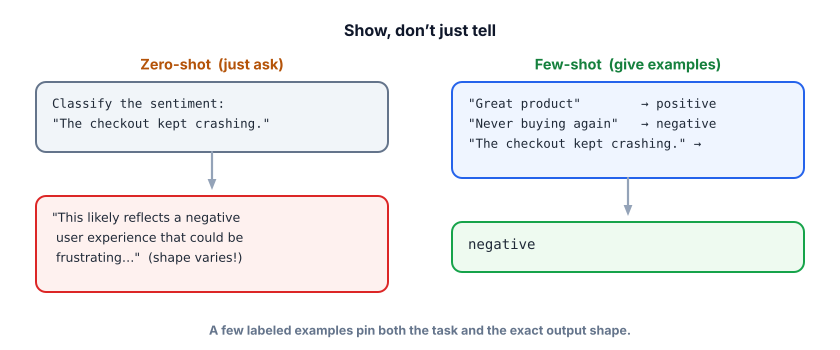
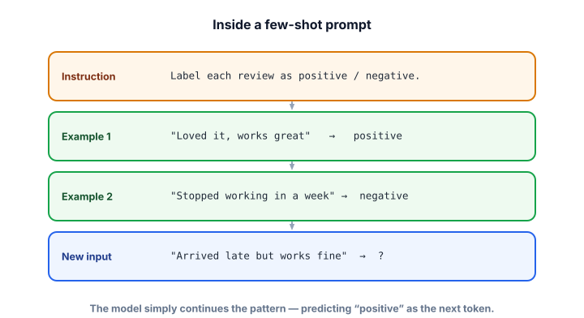

Few-shot prompting
A zero-shot prompt asks for a task with no examples.
A few-shot prompt shows two or three solved examples first, then the new input.
The model copies the pattern: the labels, the layout, even the length.
This is called in-context learning. Nothing inside the model changes, and the examples are forgotten after the request.
Examples are the cheapest way to make a classifier or extractor give clean, consistent answers.
Few-shot prompting is like showing a new kid at school two finished worksheets before handing them a blank one. They copy the layout, the way answers are written, even which boxes to leave empty. If both examples you showed had the answer 'yes', they may lean towards 'yes' too.
| In the picture | In the real system |
|---|---|
| Two finished worksheets | Two or three example pairs: input, then the desired output |
| The blank worksheet | The new input, with its answer slot left open |
| Copying the layout and the boxes | Matching the examples' format and label set |
| Leaning to 'yes' because both examples said yes | Label bias: unbalanced examples tilt the answer |
| Forgetting the worksheets tomorrow | No weight change: the examples only live in this one prompt |
Where the picture breaks. The kid actually learns and remembers tomorrow, while the model forgets the examples as soon as the request ends.
Going deeper
The single highest-leverage upgrade to most prompts isn’t better wording — it’s a few good examples. Showing the model exactly what you want, with two or three demonstrations, often does what paragraphs of instruction can’t.
Why showing beats telling
Describing a format in words is lossy — “return the sentiment” leaves a hundred decisions unspecified (one word? a sentence? capitalized? what categories?). A couple of examples answer all of those at once, unambiguously. The model is, at its core, a pattern-continuer (Track 1); give it a clear pattern and it will continue it. This is why few-shot is the workhorse technique for classification, extraction, and any task with a specific output shape.
A zero-shot prompt asks the model to do a task with no examples. A few-shot prompt includes a handful of worked examples (input → desired output) before the real input; one-shot is the special case of exactly one. The model picking up the pattern from examples in the prompt — with no training or weight changes — is called in-context learning. The examples teach for this one request only.

Structurally, a few-shot prompt is just an instruction, then example pairs, then the new input left “open” for the model to complete:

Watch examples do three jobs at once
Drag the slider to add examples one at a time. Notice they don’t just clean up the format — they also define the categories and can bias the answer. The new input is deliberately mixed (“arrived late but works great”).
Few-shot in action
New input to classify: “Arrived late but the blender works great.”
In real code you keep examples in a list and assemble the prompt, so you can add, swap, or test them easily. (Uses the ask() helper from Lesson 2.1.)
examples = [
("Loved it, works great", "positive"),
("Stopped working in a week", "negative"),
("It's fine, nothing special", "mixed"), # teaches the 'mixed' category
]
def build_fewshot(review):
shots = "\n".join(f'Review: "{r}"\nSentiment: {label}' for (r, label) in examples)
return f"""Classify each review as positive, negative, or mixed.
{shots}
Review: "{review}"
Sentiment:"""
print(ask(build_fewshot("Arrived late but the blender works great"))) # -> mixedBecause the examples demonstrate the three labels and the exact two-line format, the model returns a clean, correctly-categorized answer — and you can drop the result straight into a database field.
Assume a bank routes 1,000,000 chat messages a day into 12 intents. Each example shot is about 40 tokens. Prices: Claude Sonnet 5.5, $2 per million input tokens, cache reads at 5% of that (Anthropic models overview). Volumes and accuracy are assumptions.
- Static few-shot. Two examples per label x 12 labels = 24 shots x 40 = 960 tokens on every request. 1M x 960 = 960M tokens = $1,920/day.
- Static few-shot, cached. The shots never change, so put them in the cached prefix: 960M x $2 x 0.05 / 1M = $96/day plus cache writes.
- Dynamic few-shot. Retrieve the 6 most similar examples per message: 6 x 40 = 240 tokens, uncached because they differ each time. 1M x 240 = 240M = $480/day, plus an embedding lookup.
- Compare. The cached static set is cheapest here. Dynamic shots earn their cost only if they lift accuracy. Suppose an eval on 1,200 labelled messages shows 91% static vs 95% dynamic: that is 40,000 fewer misroutes a day. If a misroute costs an agent 2 minutes, dynamic saves about 1,300 agent-hours a day, which dwarfs the token bill.
- Check label balance. Count how often each label appears in the shots. If 'card_lost' appears 6 times and 'mortgage' once, expect a lean towards 'card_lost'. Calibration studies show models pick up exactly this kind of majority-label and recency bias from the examples (Zhao et al., 2021).
- Representative & diverse. Cover the real range of inputs, not three near-identical ones. Each example should teach something new.
- Include edge cases. One “mixed” or “I don’t know” example defines that category and gives the model permission to use it.
- Format examples identically. Any inconsistency in your examples becomes inconsistency in the output.
- Watch label balance. If every example is “positive,” the model drifts positive. Balance the labels you show.
- Mind the cost. Examples are tokens in every request — use the fewest that make it reliable (often 2–5).
You’re building an intent classifier with labels: billing, technical, cancel. Which set of few-shot examples is best?
Few-shot examples are best at fixing which problem?
You shuffle the order of the same four few-shot examples and accuracy on your test set moves from 88% to 79%. What does that tell you?
1. Write three few-shot examples for extracting {name, date} from messages like “Hey it’s Priya, let’s meet next Tuesday.” Include one message where the date is missing.
2. A teammate’s classifier outputs “positive” for almost everything. Their 4 few-shot examples are all positive reviews. Diagnose and fix.
3. Why can a single well-chosen “I don’t know” example dramatically reduce hallucination on unanswerable questions?
▸ Show solutions & reasoning
1. Keep the format identical and include the missing-date edge case so the model learns what to do when a field is absent:
Message: "Hey it's Priya, let's meet next Tuesday."
Output: {"name": "Priya", "date": "next Tuesday"}
Message: "This is Marcus — call me whenever."
Output: {"name": "Marcus", "date": null} # teaches the missing-date case
Message: "Sam here, deadline is March 3."
Output: {"name": "Sam", "date": "March 3"}The null example is doing real work: without it, the model would likely invent a date when none exists.
2. Diagnosis: label bias. All four examples are positive, so the demonstrated pattern is “output positive,” and the model dutifully continues it. Fix: balance the examples across the actual labels (some negative, some mixed) so the pattern includes choosing the right label, not just one label.
3. The model continues demonstrated patterns. If it’s never seen “I don’t know” as an acceptable output, that path has low probability, so it produces a confident guess instead. One example pairing an unanswerable question with “I don’t know” raises the probability of that response when appropriate — you’ve demonstrated that abstaining is a valid move. It’s a tiny change with an outsized effect on honesty.
The remarkable thing about few-shot is that no learning (in the training sense) happens at all — the weights never change. The model is simply conditioning its next-token predictions on the examples sitting in the context window. Researchers call this in-context learning, and it’s an emergent property of large models: a pattern in the prompt reshapes the output distribution as if the model had been briefly “taught.” Practically, that means your examples are powerful but ephemeral — they apply only to requests that include them, and they cost tokens every time.
That cost/limit framing tells you when to graduate to other tools. If you need many examples (dozens+), static few-shot gets expensive and bumps the context window — at which point you either retrieve the most relevant few examples per input (dynamic few-shot, which is just RAG over your example bank — Track 3) or fine-tune the behavior into the weights so you no longer pay for examples each call (Track 5). A clean mental ladder: zero-shot → few-shot → dynamic (retrieved) few-shot → fine-tune, climbing only when the rung below stops being enough.
Few-shot pins what the output looks like. The next technique improves how well the model reasons to get there — especially on multi-step problems: chain-of-thought.
labs/02_structured_output.pyFree and offline once set up: Ollama with qwen2.5:7b, plus the packages in labs/README.md. From the course folder:
python labs/02_structured_output.pyWhat to look for: The lab's SYSTEM prompt has no examples. Add two example email-to-ticket pairs to it and rerun: with 8 of 8 already valid you will not see a parse-rate change, but watch section D's category accuracy against the gold labels (7 of 8 on our run; the compliment was filed as delivery). The lab does not test label bias; to see it, make all your examples share one label and count how the outputs shift.
Small samples: these labs use 5 to 20 cases so they run in minutes on a laptop. Where they report a rate, they print n and a 95% Wilson interval. Read them as a demonstration of the mechanism, not as a measured rate for your system; for that you need hundreds of cases and several seeds.
▸ Recorded output (our run, 2026-11-03, qwen2.5:7b on a laptop GPU)
C) Schema-valid is not business-valid: validate rules, retry with the error
rule violations repaired by retry: 0
D) Content check against gold labels (shape-valid does not mean right)
#4: model said 'delivery', a human would file 'other': 'Just wanted to say the delivery guy was very polite. thanks!'
category accuracy: 7/8
Summary
vague-prompt valid: 0/4 = 0% (95% CI 0%-49%)
prompt-only valid: 8/8 = 100% (95% CI 68%-100%)
schema-constrained valid: 8/8 = 100% (95% CI 68%-100%)
category accuracy (gold): 7/8 = 88% (95% CI 53%-98%)
On this model and these 8 emails a clear prompt already gives valid JSON every time, so the schema shows
NO measurable advantage here. Its value is the guarantee on the inputs you have not tested yet.
Look: constrained decoding guarantees the SHAPE. It does not guarantee the CONTENT is right;
that is what the business-rule check + retry (and your eval set) are for.Your numbers will differ a little run to run. Full log: labs/outputs. Source: labs/02_structured_output.py.
Warm-up. You have 8 labels and want 2 shots each at about 35 tokens per shot. How many tokens do the examples add per request, and what is that per day at 200,000 requests?
▸ Solution
8 x 2 x 35 = 560 tokens per request. 200,000 x 560 = 112M input tokens a day. Multiply by your model's input price, and check whether caching the fixed examples applies, since that can cut this a lot.
Transfer. Your extraction prompt has three examples, all where the date is present. Production emails often have no date and the model invents one. Fix the example set and explain why it works.
▸ Solution
Replace or add one example where the date is missing and the output is {"date": null}. The model continues demonstrated patterns; with no null example, 'null' is an unseen and low-probability output, so it guesses. Showing null once makes abstaining a normal move. Also check that the schema allows null, and add missing-date emails to your eval set.
Stretch. Min et al. (2022) found that, for some classification tasks, replacing the gold labels in demonstrations with random labels hurt accuracy less than expected. What does this suggest examples are really teaching, and how should that change how you pick them?
▸ Solution
It suggests demonstrations often teach the format, the label space and the kind of inputs to expect, more than the exact input-to-label mapping. So pick examples that cover the real input distribution and every label, and keep the format identical. Do not assume correct labels alone guarantee the model learned your boundary; for subtle boundaries you still need clear instructions, tricky examples, an eval, and possibly fine-tuning.
Junior What is the difference between zero-shot and few-shot prompting?
▸ Model answer
Zero-shot gives the model only instructions. Few-shot adds a handful of worked examples, input then desired output, before the real input. Examples pin down the format, the labels and the style much more precisely than words, so few-shot usually makes classification and extraction more consistent. The cost is extra input tokens on every request, and the examples only apply to the requests that include them.
Mid How do you choose few-shot examples, and how many?
▸ Model answer
Cover every label, include edge cases such as missing fields or 'unknown', keep the format exactly the same across examples, and balance the labels so the model does not lean one way. Start with 2 to 5 and add more only if an eval shows it helps. Test a few orderings, since order can matter. If you need many examples, retrieve the most similar few per input from an example bank, or consider fine-tuning.
Senior When do you move from few-shot prompting to fine-tuning?
▸ Model answer
When an eval shows few-shot has plateaued below the bar, when the examples needed are too many to send on every call even with caching, when latency or cost per call matters at high volume, or when the behaviour is a stable style or format used everywhere. Fine-tuning needs a labelled dataset, an eval, and a retraining plan as data drifts. In between there is dynamic few-shot: retrieve examples per input. I would compare all three on the same eval with cost per 1,000 requests next to accuracy.
- Language Models are Few-Shot Learners (Brown et al., 2020) — arXiv
- Calibrate Before Use: Improving Few-Shot Performance of Language Models (Zhao et al., 2021) — arXiv
- Rethinking the Role of Demonstrations (Min et al., 2022) — arXiv
- Fantastically Ordered Prompts and Where to Find Them (Lu et al., 2021) — arXiv
In one line: Show two or three solved examples and the model copies the pattern for the new one.